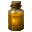
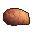
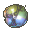
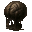
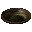
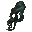
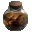
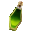
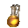

Ингредиенты последовательности 6
29 ингредиентов. Шанс — за одну попытку, убийство, блок или сундук. «Главный» — ингредиент в центральном слоте котла.
Аметист
 Аметист. Нужен в зельях: Колесо Фортуны 6, Ошибка 4.
Аметист. Нужен в зельях: Колесо Фортуны 6, Ошибка 4.
- Блок. Аметистовая друза (только природный блок) — 20 % за блок.
- Житель мода. Торговец Потусторонних (если выпадет среди его товаров) — 10–18 алмазов.
- Сундук. Постройки Мира духов — 15 %.
- Существо мода. Синий чародей (водится: Мир духов; приходит и Ночью Мира духов) — 5,3 % за убийство.
Вода Золотого источника

- Пустая бутылка. Источник воды (в биоме: Заросшие пещеры, Карстовые пещеры) — 100 % за попытку, бутылка остывает 0,5 с.
- Житель мода. Торговец Потусторонних (если выпадет среди его товаров) — 10–18 алмазов.
Выделения злого насекомого-кукловода
 Выделения злого насекомого-кукловода. Нужен в зельях: Колесо Фортуны 6, Ошибка 4.
Выделения злого насекомого-кукловода. Нужен в зельях: Колесо Фортуны 6, Ошибка 4.
- Крафт. Верстак.
- Житель мода. Торговец Потусторонних (если выпадет среди его товаров) — 10–18 алмазов.
- Сундук. Постройки Мира духов — 17 %.
- Существо мода. Гнойная рука (водится: Мир духов) — 9,4 % за убийство.
Глаза суккуба
 Глаза суккуба. Нужен в зельях: Демонесса 6 — главный.
Глаза суккуба. Нужен в зельях: Демонесса 6 — главный.
- Крафт. Верстак.
- Житель мода. Торговец Потусторонних (если выпадет среди его товаров) — 10–18 алмазов.
- Существо мода. Безголовая невеста (водится: Мир духов) — 10 % за убийство.
Душа бледного лича
 Душа бледного лича. Нужен в зельях: Смерть 6 — главный.
Душа бледного лича. Нужен в зельях: Смерть 6 — главный.
- Крафт. Верстак.
- Житель мода. Торговец Потусторонних (если выпадет среди его товаров) — 10–18 алмазов.
- Сундук. Постройки Мира духов — 18 %.
- Существо мода. Мрачный Жнец (водится: Мир духов, Подземный мир; приходит и Ночью Мира духов) — 13 % за убийство.
Компас, связанный с Астральным миром
 Компас, связанный с Астральным миром. Нужен в зельях: Дверь 1, Тьма 6.
Компас, связанный с Астральным миром. Нужен в зельях: Дверь 1, Тьма 6.
- Крафт. Верстак.
- Житель мода. Торговец Потусторонних (если выпадет среди его товаров) — 10–18 алмазов.
- Житель мода. Священник Вечной Ночи (если выпадет среди его товаров) — 10–18 алмазов.
- Существо мода. Погибель (водится: Мир духов; приходит и Ночью Мира духов) — 1,7 % за убийство.
Кристаллизованные корни

- Крафт. Верстак.
- Житель мода. Торговец Потусторонних (если выпадет среди его товаров) — 10–18 алмазов.
- Житель мода. Священник Вечного Палящего Солнца (если выпадет среди его товаров) — 10–18 алмазов.
- Существо мода. Каменный голем (водится: весь верхний мир) — 6,7 % за убийство.
Кристаллические перья Синего теневого сокола
Кристаллические перья Синего теневого сокола. Нужен в зельях: Тиран 6 — главный.
- Житель мода. Торговец Потусторонних (если выпадет среди его товаров) — 10–18 алмазов.
- Существо мода. Дервиш (водится: Мир духов; приходит и Ночью Мира духов) — 17 % за убийство.
Кристаллический нитевик
Кристаллический нитевик. Нужен в зельях: Ошибка 6 — главный.
- Добыча. Эндермит — 12 % за убийство игроком.
- Житель мода. Торговец Потусторонних (если выпадет среди его товаров) — 10–18 алмазов.
- Существо мода. Злоуст (водится: Мир духов; приходит и Ночью Мира духов) — 14 % за убийство.
Кристаллическое ядро феникса бедствия
 Кристаллическое ядро феникса бедствия. Нужен в зельях: Колесо Фортуны 6 — главный.
Кристаллическое ядро феникса бедствия. Нужен в зельях: Колесо Фортуны 6 — главный.
- Житель мода. Торговец Потусторонних (если выпадет среди его товаров) — 10–18 алмазов.
- Существо мода. Дервиш (водится: Мир духов; приходит и Ночью Мира духов) — 17 % за убийство.
Кровь Похитителя душ
 Кровь Похитителя душ. Нужен в зельях: Колесо Фортуны 6, Ошибка 4.
Кровь Похитителя душ. Нужен в зельях: Колесо Фортуны 6, Ошибка 4.
- Пустая бутылка. Зомбифицированный пиглин — 35 % за попытку, бутылка остывает 5 с.
- Житель мода. Торговец Потусторонних (если выпадет среди его товаров) — 10–18 алмазов.
- Существо мода. Призрак (водится: Мир духов, Подземный мир; приходит и Ночью Мира духов) — 7,3 % за убийство.
Кровь тысячеликого охотника

- Пустая бутылка. Крестьянин (с Shift; взрослое) — 35 % за попытку, бутылка остывает 10 с, существо получает 1 урона.
- Житель мода. Торговец Потусторонних (если выпадет среди его товаров) — 10–18 алмазов.
- Существо мода. Странная Погибель (водится: Мир духов; приходит и Ночью Мира духов) — 32 % за убийство.
Морская, озёрная и ледниковая вода
 Морская, озёрная и ледниковая вода. Нужен в зельях: Смерть 2, Дверь 6.
Морская, озёрная и ледниковая вода. Нужен в зельях: Смерть 2, Дверь 6.
- Крафт. Верстак.
- Житель мода. Торговец Потусторонних (если выпадет среди его товаров) — 10–18 алмазов.
- Сундук. Постройки Мира духов — 16 %.
Мутировавший гипофиз Тысячеликого охотника

- Добыча. Слизень (только самый большой, размер 4) — 8 % за убийство игроком.
- Житель мода. Торговец Потусторонних (если выпадет среди его товаров) — 10–18 алмазов.
- Существо мода. Странная Погибель (водится: Мир духов; приходит и Ночью Мира духов) — 32 % за убийство.
Плод иллюзорного звенящего древа
Плод иллюзорного звенящего древа. Нужен в зельях: Зритель 6 — главный.
- Житель мода. Торговец Потусторонних (если выпадет среди его товаров) — 10–18 алмазов.
- Археология. Тёплые океанские руины — подозрительный песок — 15 %.
- Существо мода. Синий чародей (водится: Мир духов; приходит и Ночью Мира духов) — 11 % за убийство.
Порошок травы драконьего зуба

- Крафт. Верстак.
- Житель мода. Торговец Потусторонних (если выпадет среди его товаров) — 10–18 алмазов.
Прах мумии
 Прах мумии. Нужен в зельях: Демонесса 1, Демонесса 2, Демонесса 4, Демонесса 3, Смерть 6.
Прах мумии. Нужен в зельях: Демонесса 1, Демонесса 2, Демонесса 4, Демонесса 3, Смерть 6.
- Житель мода. Торговец Потусторонних (если выпадет среди его товаров) — 10–18 алмазов.
- Археология. Пустынный храм — подозрительный песок, Колодец в пустыне — подозрительный песок — 20 %.
- Сундук. Постройки Мира духов — 15–18 %.
- Существо мода. Безголовая невеста (водится: Мир духов) — 0,49 % за убийство.
Прядь волос глубоководной наги

- Житель мода. Торговец Потусторонних (если выпадет среди его товаров) — 10–18 алмазов.
- Существо мода. Мурлок (водится: океаны) — 13 % за убийство.
Ртуть
 Ртуть. Нужен в зельях: Смерть 2, Дверь 6.
Ртуть. Нужен в зельях: Смерть 2, Дверь 6.
- Крафт. Плавильная печь.
- Житель мода. Торговец Потусторонних (если выпадет среди его товаров) — 10–18 алмазов.
- Сундук. Постройки Мира духов — 18 %.
- Существо мода. Полупрозрачный чародей (водится: Мир духов; приходит и Ночью Мира духов) — 2,2 % за убийство.
Сок аконита

- Крафт. Верстак.
- Житель мода. Торговец Потусторонних (если выпадет среди его товаров) — 10–18 алмазов.
Сок водяного папоротника

- Пустая бутылка. Ламинария, Стебель ламинарии, Морская трава, Высокая морская трава — 50 % за попытку, бутылка остывает 1 с.
- Житель мода. Торговец Потусторонних (если выпадет среди его товаров) — 10–18 алмазов.
- Житель мода. Священник Вечного Палящего Солнца (если выпадет среди его товаров) — 10–18 алмазов.
Сок Сияющего древа духовного договора

- Пустая бутылка. Пещерная лоза, Стебель пещерной лозы, Светящийся лишайник — 40 % за попытку, бутылка остывает 1 с.
- Житель мода. Торговец Потусторонних (если выпадет среди его товаров) — 10–18 алмазов.
- Житель мода. Священник Вечного Палящего Солнца (если выпадет среди его товаров) — 10–18 алмазов.
Страницы дневника старше 22 лет
 Страницы дневника старше 22 лет. Нужен в зельях: Смерть 3, Дверь 6.
Страницы дневника старше 22 лет. Нужен в зельях: Смерть 3, Дверь 6.
- Житель. Библиотекарь (уровень «подмастерье») — 20 изумрудов, до 4 сделок.
- Житель мода. Торговец Потусторонних (если выпадет среди его товаров) — 10–18 алмазов.
- Существо мода. Демон знания (водится: Мир духов, океаны; приходит и Ночью Мира духов) — 5,6 % за убийство.
Только что украденное вино
 Только что украденное вино. Нужен в зельях: Тьма 1, Ошибка 6.
Только что украденное вино. Нужен в зельях: Тьма 1, Ошибка 6.
- Сундук. Аванпост разбойников, Лесной особняк — 35 %.
- Житель мода. Торговец Потусторонних (если выпадет среди его товаров) — 10–18 алмазов.
- Житель мода. Священник Вечной Ночи (если выпадет среди его товаров) — 10–18 алмазов.
Целый мозг Асмана
 Целый мозг Асмана. Нужен в зельях: Дверь 6 — главный.
Целый мозг Асмана. Нужен в зельях: Дверь 6 — главный.
- Крафт. Верстак.
- Житель мода. Торговец Потусторонних (если выпадет среди его товаров) — 10–18 алмазов.
- Существо мода. Асман (водится: Мир духов, океаны) — 73 % за убийство.
Червь духа
 Червь духа. Нужен в зельях: Дверь 2, Тьма 6, Ошибка 2.
Червь духа. Нужен в зельях: Дверь 2, Тьма 6, Ошибка 2.
- Блок. Мицелий (лопатой; только природный блок) — 12 % за блок.
- Житель мода. Торговец Потусторонних (если выпадет среди его товаров) — 10–18 алмазов.
- Житель мода. Священник Вечной Ночи (если выпадет среди его товаров) — 10–18 алмазов.
- Существо мода. Погибель (водится: Мир духов; приходит и Ночью Мира духов) — 5 % за убийство.
Череп глубоко спящего
 Череп глубоко спящего. Нужен в зельях: Тьма 6 — главный.
Череп глубоко спящего. Нужен в зельях: Тьма 6 — главный.
- Крафт. Верстак.
- Житель мода. Торговец Потусторонних (если выпадет среди его товаров) — 10–18 алмазов.
- Житель мода. Священник Вечной Ночи (если выпадет среди его товаров) — 10–18 алмазов.
- Существо мода. Безголовая невеста (водится: Мир духов) — 10 % за убийство.
Эфирное масло жимолости
 Эфирное масло жимолости. Нужен в зельях: Смерть 2, Дверь 6.
Эфирное масло жимолости. Нужен в зельях: Смерть 2, Дверь 6.
- Крафт. Верстак.
- Житель мода. Торговец Потусторонних (если выпадет среди его товаров) — 10–18 алмазов.
Ядро блуждающего астероида
 Ядро блуждающего астероида. Нужен в зельях: Дверь 1, Тьма 6.
Ядро блуждающего астероида. Нужен в зельях: Дверь 1, Тьма 6.
- Блок. Обсидиан (только природный блок) — 3 % за блок.
- Житель мода. Торговец Потусторонних (если выпадет среди его товаров) — 10–18 алмазов.
- Житель мода. Священник Вечной Ночи (если выпадет среди его товаров) — 10–18 алмазов.
- Сундук. Постройки Мира духов — 24 %.
- Существо мода. Погибель (водится: Мир духов; приходит и Ночью Мира духов) — 1,7 % за убийство.